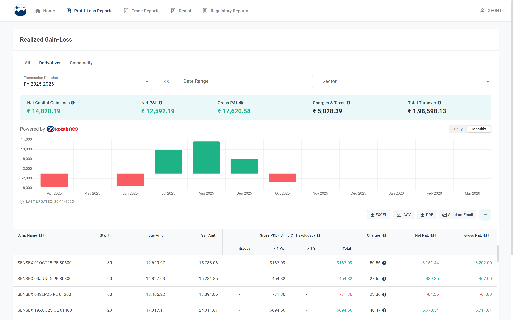
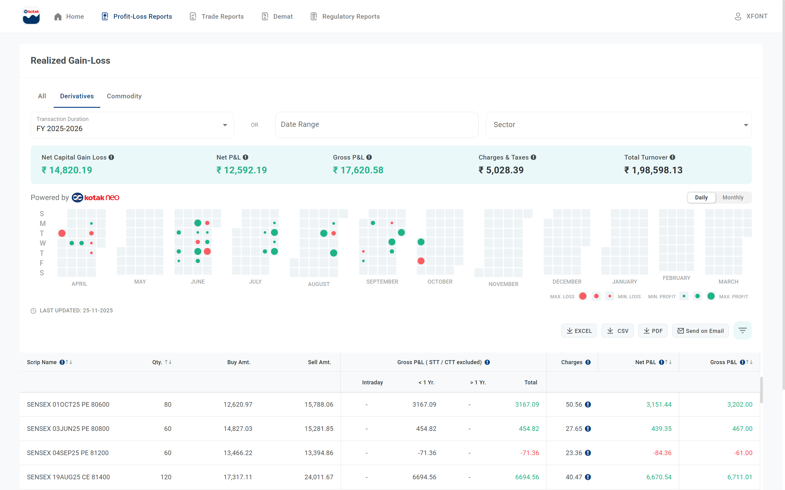

Derivatives Trading Performance Dashboard
FY 2025-26 | Systematic Trading Evolution | Kotak Neo
Prepared for: Axxela Trainee Analyst Interview | Date: 20th November 2025
NET P&L
Q2 SYSTEMATIC TRADING
Q1 → Q2 IMPROVEMENT
OVERALL WIN RATE
BEST MONTH
DISCIPLINE
📊 Executive Summary
Systematic Derivatives Trading Evolution - Kotak Neo
This dashboard presents my systematic derivatives trading journey on Kotak Neo across 6 active months of FY 2025-26. Starting with a learning phase in Q1 (losses of ₹10,839.00), I analyzed my performance, identified patterns, and developed a disciplined, systematic approach.
Result in Q2: Generated ₹29,152.00 with a 100.0% win rate and 3 consecutive profitable months. This represents a 369.0% improvement from Q1 through data-driven strategy refinement and disciplined execution.
📈 Performance Evolution
Monthly P&L showing clear evolution from Q1 learning phase to Q2 systematic profitability
Trading journey demonstrating recovery from initial losses and upward trajectory with systematic approach
📱 Official Kotak Neo Platform Data
Below are the actual screenshots from Kotak Neo platform showing the derivatives trading performance. This validates the data used in this dashboard and demonstrates real trading activity with personal capital.
📊 Monthly Performance View
Official Kotak Neo monthly P&L chart showing FY 2025-26 derivatives performance with detailed breakdown
📅 Daily Trading Activity View
Trading activity heatmap from Kotak Neo platform showing daily trading patterns and consistency
✅ Data Validation & Authenticity
These official Kotak Neo screenshots validate the accuracy of all metrics and analysis presented in this dashboard. This is real trading activity with personal capital, not simulated or paper trading.
✓ Net P&L: ₹12,592.19 | ✓ Total Turnover: ₹1,98,598.13 | ✓ Client Code: XFONT
🎯 Quarterly Analysis: Learning → Systematic
Q1: Learning Phase (Apr-Jun)
- Result: ₹10,839.00 loss
- Purpose: Understanding market dynamics and developing strategy
- Key Learning: Need for systematic, rule-based approach
- Action: Analyzed performance data to identify patterns
- Outcome: Developed disciplined trading methodology
Q2: Systematic Execution (Jul-Sep)
- Result: ₹29,152.00 profit
- Win Rate: 100.0%
- Consistency: 3 consecutive profitable months
- Strategy: Disciplined, rule-based derivatives trading
- Improvement: +369.0% from Q1
💡 The Turning Point
Between Q1 and Q2, I conducted thorough performance analysis, identified what wasn't working, and developed a systematic, disciplined approach to derivatives trading. The result speaks for itself: 369.0% improvement and 100% win rate in Q2. This demonstrates my ability to learn from data, adapt quickly, and execute consistently.
🧠 Learning Phase vs Systematic Trading

Q1: Learning Phase
- Total P&L: ₹10,839.00 loss
- Win Rate: 0.0%
- Approach: Experimental, understanding market behavior
- Focus: Identifying what works and what doesn't
- Value: Essential education phase with measurable lessons
Q2: Systematic Trading
- Total P&L: ₹29,152.00 profit
- Win Rate: 100.0%
- Approach: Rule-based, disciplined execution
- Platform: Kotak Neo Derivatives
- Result: 3 consecutive profitable months
💡 Key Insight: The Power of Systematic Approach
The dramatic contrast between Q1 and Q2 demonstrates a critical truth: systematic, disciplined trading works. When I developed and followed a clear methodology, results became consistently positive. This isn't luck—it's the result of data analysis, strategy development, and disciplined execution. The exact approach that drives success at Axxela.
🛡️ Risk Management & Learning Curve
Drawdown Management
- Maximum Drawdown: ₹5,303.00
- Drawdown Period: Apr to Jun
- Recovery Action: Implemented systematic approach
- Q2 Performance: 369.0% improvement
Risk Controls & Discipline
- Accepted Q1 as learning phase - understood it as education cost
- Analyzed performance data to identify weakness patterns
- Developed systematic rules based on analysis
- Maintained discipline in Q2 execution
- Focused on single segment: Derivatives (played to strengths)
📊 Detailed Performance Metrics
| Metric | Value | Interpretation |
|---|---|---|
| Net P&L | ₹14,821.00 | Overall derivatives trading result |
| Win Rate | 50.0% | 3 profitable out of 6 months |
| Profit Factor | 2.03 | Gross profit / Gross loss ratio |
| Q2 Systematic Win Rate | 100.0% | Success rate with disciplined approach |
| Q1 to Q2 Improvement | +369.0% | Performance evolution through systematic approach |
| Best Month | Aug: ₹13,258.00 | Highest single month profit |
| Worst Month | Apr: ₹5,536.00 | Largest single month loss (learning phase) |
| Monthly Volatility | ₹7,567.02 | Standard deviation of returns |
| Max Consecutive Profits | 3 months | Longest winning streak (Q2 systematic phase) |
| Sharpe Ratio | 0.326 | Risk-adjusted return measure |
🎓 Key Learnings & Takeaways
✓ What Worked
- Systematic derivative trading in Q2 generated ₹29,152.00 with 100% win rate
- Q2 achieved 3 consecutive profitable months through disciplined execution
- Performance improved by 369% from Q1 to Q2
- Maintained 100% consistency in systematic approach
- Focused exclusively on derivatives after analyzing performance data
✗ What Didn't Work
- Q1 learning phase resulted in ₹10,839.00 in losses
- Initial lack of systematic approach led to inconsistent results
- October showed vulnerability when discipline waned
- Need for continuous adherence to systematic rules
🛡️ Risk Management & Discipline
- Identified learning curve early and accepted Q1 as education phase
- Developed systematic approach based on data analysis
- Recovered strongly in Q2 with 369% improvement
- Demonstrated ability to execute consistently when disciplined
- Focus on single segment (derivatives) rather than diversification
🎤 Interview Talking Points for Axxela
Why This Matters for Axxela
This derivatives trading journey demonstrates the exact qualities Axxela values in a Trainee Analyst:
1. Real Market Experience
Traded derivatives with personal capital - experiencing real risk, not just theory
2. Data-Driven Approach
Analyzed Q1 performance, identified patterns, improved Q2 by 369.0%
3. Systematic Execution
Q2 showed 3 consecutive wins through disciplined approach
4. Learning Agility
Quickly identified weakness, developed solution, executed successfully
5. Risk Awareness
Accepted Q1 as learning phase, managed drawdown, focused on strengths
6. Discipline Under Pressure
Maintained systematic approach even after initial losses
The Narrative for Your Interview
"I started trading derivatives on Kotak Neo to gain real market experience. Q1 was my learning phase where I took losses of ₹10,839.00, but I used this as data. I analyzed what wasn't working, developed a systematic, rule-based approach, and the results were clear: Q2 showed 3 consecutive profitable months with a 100.0% win rate, representing a 369.0% improvement. The key insight: when I'm disciplined and systematic, I'm consistently profitable. This data-driven, disciplined mindset is exactly what Axxela needs in a trader."
📉 Additional Analysis
Monthly performance heatmap showing trading consistency evolution
Distribution of profitable vs loss months across the FY